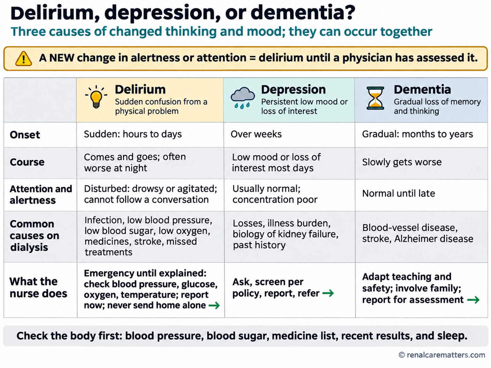
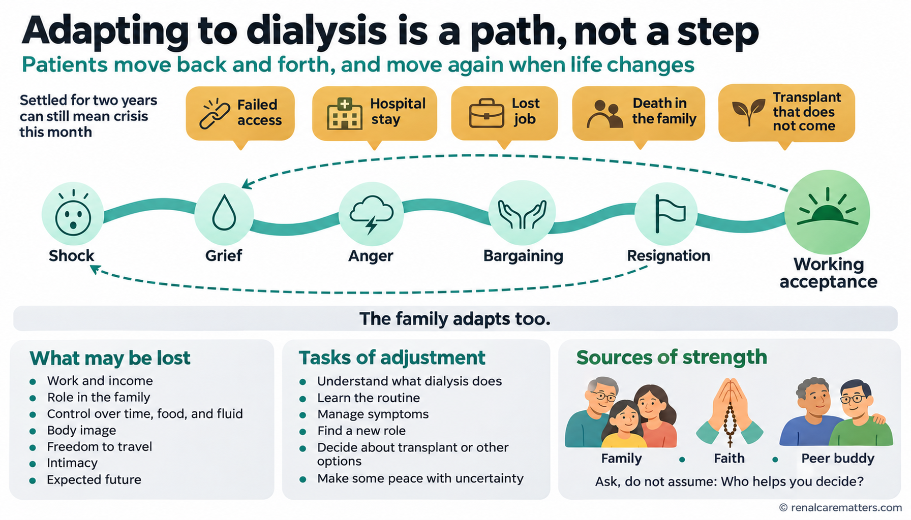
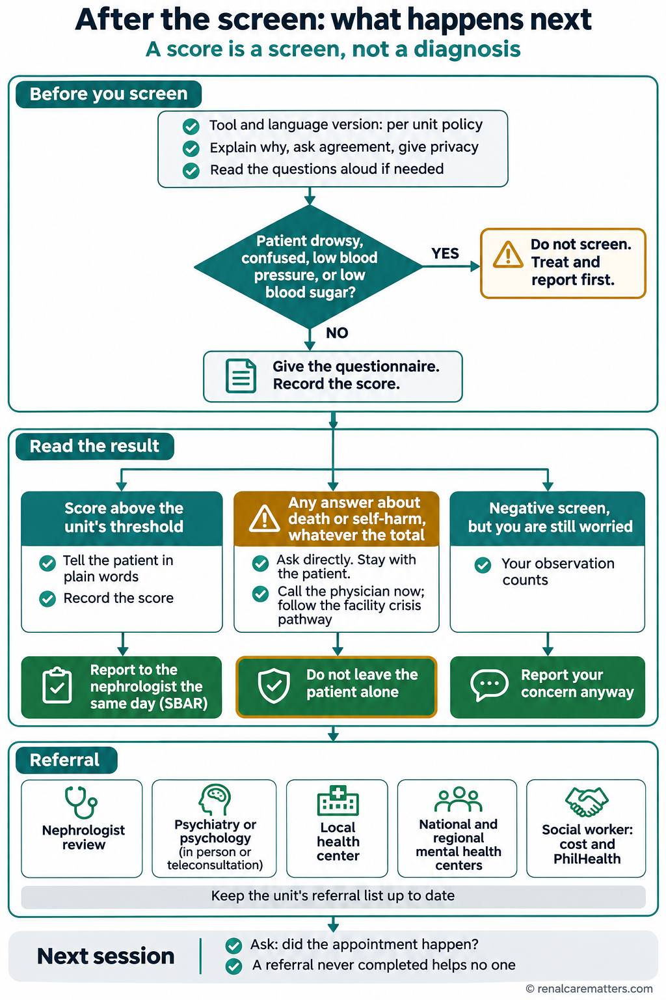
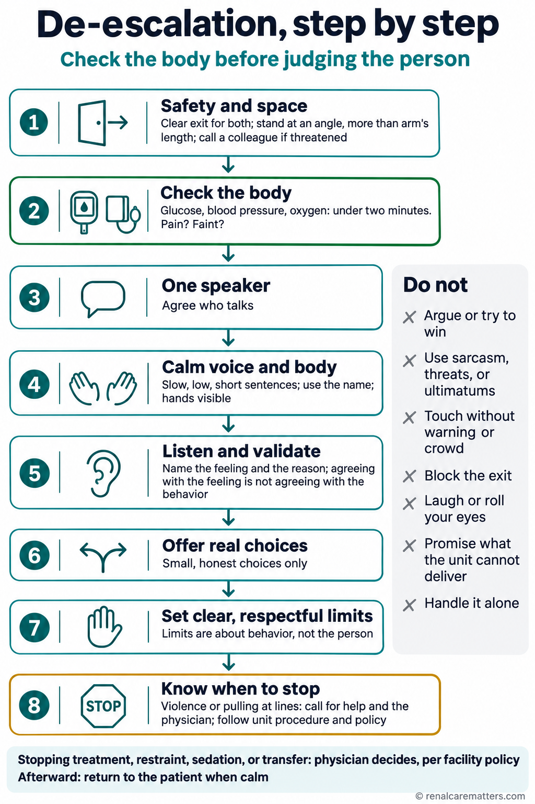
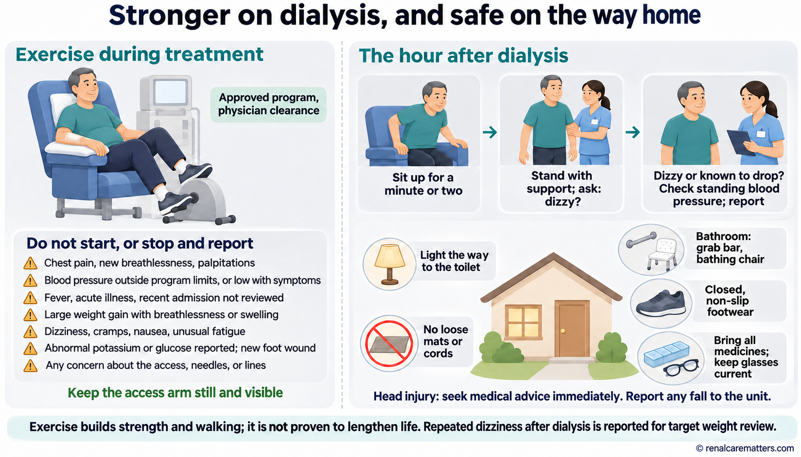
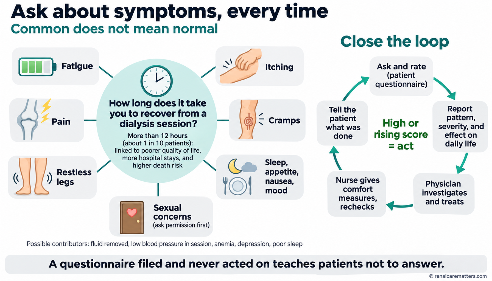

After this module you should be able to
- Describe adaptation to hemodialysis as an ongoing process, and name the losses and tasks it involves for patients and families.
- Explain the biological links between kidney failure, the dialysis session, and changes in mood, thinking, sleep, and behavior, and distinguish delirium from depression and dementia.
- Summarize, with calibrated language, what is known about depression in hemodialysis: how common it is, what it is associated with, and what treatment trials have and have not shown.
- Apply the nurse's role in mental health at the chair: notice, ask, listen, screen per unit policy, document, refer, involve the family with consent, and look after yourself.
- Support a patient's adaptation to hemodialysis by recognizing losses and role changes, and by drawing on family, faith, and peer support in the Filipino context.
- Use validated screening questionnaires as unit policy directs, and act on a positive screen through the referral pathways available in the Philippines.
- Recognize cognitive impairment, delirium, poor sleep, and restless legs in the unit, and adapt teaching to a patient with memory problems.
- Support family caregivers with attention to consent and confidentiality, and respond to suicide risk or self-neglect by asking directly, staying with the patient, and escalating per facility policy.
- Identify the medical causes of agitation and disruptive behavior in the hemodialysis (HD) unit before attributing behavior to personality, and de-escalate a tense situation step by step within unit policy.
- Describe how documentation, team review, behavior agreements, and debriefing protect patients and staff, and state the ethical limits on refusing or discharging a patient from a dialysis unit.
- Explain why muscle and physical function decline on HD, summarize the evidence for intradialytic and home exercise, and apply a safety screen before exercise during treatment.
- Recognize frailty, post-dialysis orthostatic hypotension, and fall risk, and teach fall prevention and home safety, referring for therapy when needed.
- Address skipped and shortened sessions, high interdialytic weight gain, and symptom burden through nonjudgmental problem-solving, routine symptom review, and goals that matter to the patient.
A life rearranged three times a week
Picture a week before dialysis: work, meals, family, church, a drink with friends, a trip to the province. Now take out three half-days, each about four hours on the machine plus travel and waiting, and fix them in the same places every week, for years. Add a fluid limit, a food list, a box of medicines, needles in the arm, and a body that feels different after each treatment. That is hemodialysis (HD) as the patient lives it. It is not one event. It is a life rearranged around a schedule.
Adaptation is how a person rebuilds a life that works inside that new shape. It is a process, not a stage passed once. Most patients move back and forth between shock, grief, anger, bargaining, resignation, and a working acceptance. They move again when something changes: a failed access, a hospital stay, a lost job, a death in the family, a transplant that does not come. A patient who seemed settled for two years can be in crisis this month.
The picture has two limits. First, a low mood on dialysis is not always “understandable sadness.” Kidney failure and its treatment change the brain’s chemistry, blood supply, and sleep. Some of what looks like attitude is biology, and some of what looks like biology is depression that can be treated. Second, the picture shows one person, and the family adapts too. In the Philippines, chronic kidney disease (CKD) that needs dialysis is usually a family event. Costs, transport, and caregiving are shared across a household, and sometimes across countries.
You see each patient for about twelve hours a week, more than any other professional does. That makes you the person most likely to notice a change, and the person a patient is most likely to tell. Most changes in mood and behavior on the unit are understandable responses to a hard life. A few are the first sign of delirium, of a treatable depression, or of danger to the patient’s life. Your work is to notice, to ask, and to make sure the right person hears what you found. Part 2 of the module covers difficult behavior in the unit, physical function, and living longer.
How kidney failure and dialysis affect mood, thinking, sleep, and behavior
Mood, memory, attention, and sleep all depend on a brain that receives steady blood flow, enough oxygen and glucose, a stable chemical environment, and restful sleep. Kidney failure and the dialysis session disturb each of these. The mechanisms below are reasonably well supported. In any one patient several act together, and the weight of each is often unknown.
| Mechanism | What happens | What the nurse may see |
|---|---|---|
| Retained solutes | Many substances normally cleared by the kidney accumulate; some are thought to affect nerve cells and the blood vessels of the brain. Dialysis removes small molecules well but others less completely. | Slowed thinking, poor concentration, low energy, irritability; worse when sessions are missed or shortened |
| Chronic inflammation | Inflammatory signals are raised in kidney failure. In other illnesses the same signals produce “sickness behavior”: fatigue, withdrawal, poor appetite, and low mood. | Symptoms that overlap with depression, especially tiredness and loss of interest |
| Anemia | Less oxygen is carried to the brain and muscles. | Fatigue, breathlessness, poor concentration, low tolerance for activity |
| Blood pressure and fluid shifts during treatment | Rapid fluid removal can lower blood pressure (BP) and blood flow to the brain in some patients. Imaging studies suggest that repeated falls may be associated with changes in the brain’s white matter over time; cause and effect are not proven. | Yawning, dizziness, confusion, or a “washed-out” feeling late in the session and after it (Module 9) |
| Osmotic shifts | Urea falls faster in blood than in brain cells; water moves into the brain. Severe in disequilibrium (Module 9); milder forms may contribute to headache and fatigue after treatment. | Headache, nausea, restlessness, tiredness after treatment |
| Disturbed sleep | Daytime naps on the machine, itch, cramps, restless legs, breathing pauses during sleep, worry, and noise disrupt night sleep. | Daytime sleepiness, irritability, poor memory, low mood |
| Medicines | Drugs cleared by the kidney accumulate. Examples include some pain medicines, some nerve-pain medicines, sedating antihistamines, and some antinausea medicines. | Drowsiness, confusion, falls, hallucinations, often after a new medicine or a dose increase |
| Glucose and electrolytes | Insulin and some diabetes medicines are cleared more slowly, and appetite is often poor, so low blood sugar is common in diabetic patients. Low sodium and high calcium can also affect the brain. | Sweating, anger, confusion, odd behavior, or drowsiness that can look like a psychiatric problem |
Why this matters at the chair. Many of these causes can be reversed, fully or in part. A patient who is suddenly angry may be hypoglycemic. A patient who is newly forgetful may be accumulating a medicine. A patient who is exhausted and withdrawn may be anemic, underdialyzed, not sleeping, depressed, or all of these. So your first step is always physical. Check BP and blood glucose, look at the medicine list and recent laboratory results, and ask about sleep, before you conclude that a change is “just psychological.”
Delirium, depression, and dementia. These three cause most changes in thinking and mood on the unit. They can occur together, and each makes the others harder to recognize.
| Delirium | Depression | Dementia (major cognitive impairment) | |
|---|---|---|---|
| Onset | Sudden, over hours to days | Over weeks | Gradual, over months to years |
| Course | Fluctuates through the day; often worse at night | Persistent low mood or loss of interest most days | Slowly progressive |
| Attention and alertness | Disturbed: drowsy or agitated, cannot follow a conversation | Usually normal, though concentration is poor | Normal until late stages |
| Typical causes in dialysis patients | Infection, low BP, low blood sugar, low oxygen, medicines, stroke, missed treatments | Losses, illness burden, biology of kidney failure, past history | Vascular disease, stroke, Alzheimer disease, and other causes |
| Nursing response | A medical emergency until explained: check BP, glucose, oxygen, and temperature; report immediately | Ask, screen per policy, report, and refer | Adapt teaching and safety; involve the family; report for assessment |
A new change in alertness or attention is delirium, and therefore a physical problem, until a physician has assessed it.

What is known about depression, anxiety, and their treatment
How common it is. A systematic review pooled observational studies of adults on dialysis. Depression confirmed by clinical interview affected about one in four. Self-report rating scales flagged depressive symptoms in more, about four in ten. The authors suggest that rating scales may overestimate depression in dialysis patients, partly because fatigue, poor sleep, and poor appetite are symptoms of both kidney failure and depression.1 Anxiety is also common, often alongside depression, but it has been studied less. Cognitive impairment is common too, and often unrecognized. In one study of HD patients aged 55 and over, only about one in eight had normal cognition on formal testing, and very few had impairment recorded in their charts.2
What depression is associated with. Across many observational studies, depressive symptoms in dialysis patients are associated with higher mortality.3 In a large international cohort, both physician-diagnosed depression and two simple self-report questions about feeling down were associated with more deaths and more hospital admissions.4 In a cohort followed with monthly questionnaires, depressive symptoms were associated with missed and shortened treatments, emergency visits, hospital admissions, and death.5 In another international study, patients with more depressive symptoms missed more treatments, and missed treatments were in turn associated with higher mortality.6
These are associations. They do not show that depression causes these outcomes, or that treating it would prevent them. Sicker patients may simply be both more depressed and more likely to die. What they do show is that a patient with low mood is a patient at higher risk. That is reason enough to notice and act.
What treatment trials show. The trials are few and small, and they do not all point the same way. Each measured depression scores on a questionnaire, which is a symptom measure. None was designed to show an effect on hospital admissions or survival.
| Trial | Who | Comparison | Main finding |
|---|---|---|---|
| Chairside cognitive behavioral therapy7 | Patients on HD with depressive symptoms; 59 completed | Cognitive behavioral therapy delivered during treatment for 3 months versus a waiting list | Larger fall in depression scores, better quality of life, and lower fluid gains between sessions with therapy |
| Sertraline versus placebo feasibility trial (United Kingdom)8 | Patients on HD with major depression; 30 randomized | Sertraline versus placebo for 6 months | Depression scores improved in both groups with no difference between them; more dropouts from side effects with sertraline. Too small to be conclusive. |
| CAST9 | Patients with CKD stages 3 to 5 not on dialysis, with major depression; 201 randomized | Sertraline versus placebo for 12 weeks | No difference in depressive symptoms; more nausea, vomiting, and diarrhea with sertraline |
| ASCEND10 | Patients on HD with depressive symptoms; 120 in the treatment phase | Cognitive behavioral therapy delivered in the dialysis facility versus sertraline for 12 weeks | Depression scores modestly lower with sertraline than with therapy; more adverse events with sertraline. There was no untreated comparison group. |
ASCEND also tested whether a structured “engagement interview” would make patients more willing to start treatment. About two-thirds started treatment whether or not they had the interview.10 In plain terms: talking therapy and medicine both have some evidence in dialysis patients. Neither is a sure cure. The side effects of medicine are real. The choice between them belongs to the patient, with the physician or mental health professional. Your contribution is to make sure the question is asked and the referral is made.
Screening tools. Several validated questionnaires are used in dialysis units, including the Patient Health Questionnaire (nine-item), the Beck Depression Inventory (second edition), and, for anxiety, the Generalized Anxiety Disorder scale (seven-item). The screening section below describes how to use them. A score is a screen, not a diagnosis. Thresholds and how often to screen come from unit policy and the instrument’s validated version.
What remains uncertain. Which patients benefit most from which treatment. Whether treatment changes hospital admissions or survival. How well screening tools perform in Filipino languages and settings. How best to deliver talking therapy where mental health professionals are scarce.
Low mood marks a patient at higher risk, whatever its cause. Notice it, ask about it, and pass it on the same day.
The nurse’s role: notice, ask, listen, screen, report, refer
You do not diagnose depression or prescribe psychiatric medicines. Your role is narrower, and it comes up far more often: to notice, to ask, to screen when policy says so, to record, to report, and to make sure a referral actually happens.
Notice. Changes worth noticing: a patient who stops talking with neighbors in the next chair, arrives late or leaves early, misses sessions, stops keeping the fluid limit after months of control, neglects grooming, eats less, sleeps through every session, or becomes irritable with staff. Listen for phrases such as “Pagod na ako” (“I am tired”) or “Wala na akong silbi” (“I am useless now”). Any one of these may have a physical cause. Several together are a reason to ask.
Ask, in private, and listen. Choose a quiet moment, ideally early in the session when the patient is most alert, and lower your voice. The dialysis floor is not private. Open questions work better than closed ones:
- “How have you been coping with dialysis lately?”
- “You seem quieter than usual. What has been happening at home?”
- “How are you sleeping? How is your appetite?”
- “Many patients feel discouraged at times. Has that happened to you?”
Then listen without hurrying to reassure. “Be strong” or “Just pray” can close a conversation the patient needed to have. Reflect what you heard (“It sounds like losing your job has been the hardest part”), and ask what would help.
Screen per unit policy. If your unit uses a screening questionnaire, give it as the policy describes, in a language the patient reads well, with privacy, and record the score. Do not screen a patient who is drowsy, confused, or hypotensive until that is addressed.
Document and report. Record what the patient said in their own words, what you observed, any score, and whom you told. Report a positive screen or a concerning change to the nephrologist the same day, using SBAR (Situation, Background, Assessment, Recommendation). Any mention of death, self-harm, or not wanting to live is handled at once, as the crisis section below describes.
Refer, and follow up. Depending on what your unit has, referral may go to the nephrologist for medical review, a psychiatrist or psychologist, the social worker for money, transport, or work problems, a dietitian, a chaplain or the patient’s own faith leader, or a peer-support group. A referral that is never completed helps no one. At the next session, ask whether the appointment happened.
Involve the family, with consent. Families often notice change first, and they carry much of the load. Ask the patient whether, and how much, you may share with them. Respect a refusal, except in immediate danger as facility policy defines it (Module 12 covers confidentiality).
Look after yourself. Caring for people with a chronic, sometimes fatal illness, for years, is demanding. Grief when a long-term patient dies, frustration with patients who do not follow advice, and exhaustion are common. They are not signs of weakness. Talk with colleagues, use debriefing after difficult events, take your leave, and seek help through the facility or your own physician if your mood or sleep suffers. A nurse who is depleted notices less.
Notice, ask, record, report, and check at the next session that the referral happened. A question asked and then dropped is not care.
Adjusting to life on dialysis: losses, tasks, and sources of strength
Adaptation has no timetable, but the early months are usually the hardest. Many patients start dialysis in an emergency, with a temporary catheter, after a hospital stay, and with little time to prepare. They meet the unit as strangers who are unwell, frightened, and often in debt. A patient who seems “difficult” in the first weeks is often a patient who is grieving.
What patients lose, and what it can look like.
| Loss or change | How it may show in the unit | What helps |
|---|---|---|
| Work and income; the role of provider | Shame, anger, insisting on leaving early to work, refusing extra tests because of cost | Referral to the social worker; schedule changes where possible; acknowledging the loss aloud |
| Role in the family (parent, spouse, eldest child) | Feeling like a burden; withdrawal; irritability at home reported by family | Finding tasks the patient can still own; involving the family, with consent |
| Control over time, food, and fluid | Breaking the fluid limit, arguing about the schedule, “forgetting” medicines | Giving real choices within safe limits; teaching the patient to track their own numbers |
| Body image (fistula, catheter, skin color, weight change) | Hiding the arm, refusing a fistula, avoiding social events | Private, matter-of-fact discussion; meeting a peer who has lived with an access for years |
| Freedom to travel and plan | Missing family events in the province or abroad | Explaining that holiday dialysis can be arranged with notice |
| Sexual life and intimacy | Rarely raised by the patient; may surface as tension between spouses | Asking permission to discuss it; referral to the physician, since causes include medicines and hormones |
| Expected future | Hopelessness; waiting for a transplant that may not come | Honest information; setting near-term goals the patient chooses |
Tasks of adjustment. Over time, most patients work through a similar set of tasks. They learn what dialysis does and does not do. They learn the routine of fluid, food, medicines, and access care. They manage symptoms. They find a new role at home and, where possible, at work. They decide about transplant or other options with the team (Module 5). And they make some peace with uncertainty. You can help with each, mostly by explaining, by giving the patient a part in their own care, and by noticing when a task has stalled.
The Filipino context. Family is usually the center of care and of decisions. Many families pool income, and relatives working overseas often help pay for treatment. Some patients hide how badly they feel so as not to add to the family’s worries, or feel deep shame at being dependent. Others leave every decision to an adult child. Kidney failure and dialysis still carry stigma in some communities, where dialysis may be seen as the beginning of the end. None of these patterns fits every Filipino patient, so ask rather than assume: “Who helps you make decisions about your health?” and “Who knows how you are really feeling?”
Faith and meaning. For many patients, faith is a main source of strength: prayer before treatment, a rosary on the chair, a pastor’s visit. Respect it, and offer the chaplain or the patient’s own faith leader when the patient wishes. Faith can also become a reason not to speak of despair (“God will take care of it”) or a source of guilt (“This is a punishment”). You do not argue theology. You listen, and you still ask about mood and safety.
Peer support. Fellow patients are often the most believable teachers. A new patient may accept advice from someone who has dialyzed for ten years that they would not accept from staff. With consent on both sides, units can pair new patients with an experienced “buddy,” hold informal group sessions, or link patients with kidney patient support groups where they exist. Peers do not replace professional care for depression, and a buddy should know whom to tell if they are worried about someone.
Behind early anger there is usually a loss. Name the loss before you correct the behavior.

Screening for depression, anxiety, and related problems, and what happens next
Screening means using a validated questionnaire to find patients who need further assessment. It does not diagnose, and it does not replace asking and listening. Its value is consistency. Problems that might be missed because a patient seems cheerful, quiet, or “always like that” are picked up the same way for everyone.
| What is screened | Examples of validated tools | Notes for the dialysis unit |
|---|---|---|
| Depression | Patient Health Questionnaire (nine-item) and its two-item short form; Beck Depression Inventory (second edition); Hospital Anxiety and Depression Scale | Physical symptoms of kidney failure overlap with depression items, so scores are interpreted by a clinician.1 The ninth item of the nine-item questionnaire asks about thoughts of death or self-harm. |
| Anxiety | Generalized Anxiety Disorder scale (seven-item); Hospital Anxiety and Depression Scale | Anxiety often accompanies depression and may focus on needles, alarms, cost, or death. |
| Cognition | Mini-Cog; Montreal Cognitive Assessment | Done by trained staff, at a consistent time in the dialysis cycle (see the next section). |
| Delirium | Confusion Assessment Method | Used by staff trained in it; a new change in alertness is reported whether or not a tool is used. |
| Sleep | Pittsburgh Sleep Quality Index | Ask also about snoring with breathing pauses and about restless legs. |
| Caregiver strain | Zarit Burden Interview | Given to the caregiver, privately, with their agreement. |
Who screens, and how often. Unit policy decides which tool is used, in which language version, who gives it (a trained nurse, social worker, or psychologist), and how often. A common pattern is to screen soon after a patient starts dialysis, then at regular intervals, and again whenever something changes: a hospital stay, a bereavement, missed sessions, a new behavior. Use only versions translated and validated for the language the patient reads. Do not translate questions on the spot unless the policy allows it.
How to give it. Explain why you are asking: “We ask all our patients these questions, because feeling down is common on dialysis and can be treated.” Get the patient’s agreement, give privacy, and read the questions aloud for a patient who cannot read them. Do not screen a patient who is hypotensive, hypoglycemic, or confused.
What a positive screen triggers.
- A score above the unit’s threshold: tell the patient the result in plain words, record it, and report it to the nephrologist the same day for clinical assessment and a decision on referral.
- Any positive answer about thoughts of death or self-harm, whatever the total score: follow the crisis steps below at once.
- A negative screen in a patient you are still worried about: report your concern anyway. A questionnaire does not overrule your observation.
Referral pathways in the Philippines. Services vary widely by region. Common routes include the nephrologist’s own assessment and treatment; the hospital’s psychiatry or psychology service; an outpatient psychiatrist or psychologist, in person or by teleconsultation; the local health center, where mental health services are increasingly offered at the primary-care level; and the National Center for Mental Health and regional mental health facilities for more complex needs. The social worker helps with cost, which is often the deciding barrier, and with checking current Philippine Health Insurance Corporation (PhilHealth) and local government assistance. Each unit should keep an up-to-date list of its referral contacts. Know where yours is.
The answer to the self-harm question matters more than the total score. A yes on that item starts the crisis steps, whatever the number.

Memory, delirium, sleep, and restless legs in the unit
Recognizing cognitive impairment. Cognitive impairment is common in HD patients and often goes unrecorded.2 Clues on the unit: repeated questions about things explained before, confusion about the schedule, medicine errors, a companion who answers every question, unexplained missed sessions, trouble learning a new routine, and a family that reports the patient getting lost or forgetting meals. Report these for assessment. You do not label a patient as having dementia.
Timing matters. In a small study of 28 older HD patients, thinking was worst during the session and best shortly before it or on the day after.11 It was one small study, but the physiology fits: blood pressure and fluid shift most during the session. So do cognitive screening, important teaching, and consent conversations before connection or on a non-dialysis day, not late in the session or just after it. Repeat tests should use the same instrument at a similar time, so that a change is real and not an artifact of timing. The course’s cognitive screening and score-comparison tools are built around these rules.
Delirium on the unit. Delirium may begin during or after a session, especially in older patients, after a hospital stay, with infection, or after a new medicine. Watch for a patient who is suddenly drowsy, agitated, pulling at lines, or unable to keep attention on a simple conversation. Keep the patient safe at the chair, check BP, glucose, and oxygen, and report immediately. A patient with delirium is not sent home alone.
Teaching a patient with memory problems.
- One main message per session, in short sentences, in the patient’s own language.
- Pictures, large print, and written reminders the patient keeps; a medicine box or blister pack prepared with the pharmacist.
- Teach-back: ask the patient to explain in their own words or show you, and repeat until it is right.12
- Involve the caregiver, with consent, and give the same message to both.
- Build routines: same day, same chair, same sequence where possible.
- Check understanding again at the next session rather than assuming it lasted.
Sleep. Poor sleep is one of the most common complaints on dialysis. It feeds low mood, poor memory, and irritability. Ask about it directly. Practical advice you can give:
- Keep a regular time for waking, even after a bad night.
- Limit long naps. A short rest is fine, but sleeping through every session may make nights worse.
- Get daylight and some activity during the day.
- Avoid coffee, strong tea, cola, and energy drinks in the afternoon and evening, and avoid alcohol and smoking near bedtime.
- Keep the bedroom dark, quiet, and cool, and keep the phone away from the bed.
Some sleep problems need the physician, not advice. Report waking breathless or needing extra pillows (possible fluid overload). Report loud snoring with pauses in breathing, or severe daytime sleepiness (possible sleep apnea). Report itch or cramps that keep the patient awake. And report use of over-the-counter sleeping pills. Many contain sedating antihistamines, which can accumulate in kidney failure and may worsen restless legs.
Restless legs. Patients describe an urge to move the legs, often with crawling or aching sensations. It comes on at rest, is worse in the evening and at night, and eases with movement. It is common on dialysis, can make sitting through a session hard, and often causes poor sleep. Iron deficiency is one recognized contributor. Some medicines, including sedating antihistamines, some antidepressants, and some antinausea medicines, can make it worse. Your part is to recognize the description, report it so the physician can review iron status and medicines, and suggest simple measures meanwhile: stretching or walking when possible, massage, and warmth. Restless legs that drive a patient to cut sessions short is a reason to report promptly.
Teach, screen, and seek consent when the patient thinks best: before the session or on a day off, never at the end of a long run.
Supporting caregivers: strain, family meetings, respite, and consent
Behind most patients on HD is at least one caregiver: a spouse, an adult child, a sibling, sometimes a teenager. Caregivers bring the patient three times a week, wait for hours, manage medicines, cook to a renal diet, pay bills, and watch for danger at night, often while working or raising children. Module 10 describes caregiver burnout in home dialysis. The same strain builds more quietly around in-center HD.
Signs of caregiver strain. Exhaustion. Irritability with the patient or staff. Missed work. Their own health problems neglected. Tears in the waiting area. Saying “I cannot do this anymore.” In severe cases, neglect or harsh treatment of the patient. Ask the caregiver directly and separately: “How are you managing?” Use a caregiver strain questionnaire if the unit offers one. Refer a struggling caregiver to the social worker, and encourage them to see their own physician.
Respite and sharing the load. Practical help is often worth more than advice. Help the family list the tasks (transport, waiting, medicines, meals, money, night-time help) and see which can be shared among relatives, neighbors, the parish or community, or paid help. A rotation, so that no single person attends every session, is a simple form of respite. Relatives abroad can help by video call, and by covering specific costs, which can relieve the one who is present.
Family meetings. When decisions are large or the family is in conflict, a planned meeting works better than corridor conversations.
- Prepare: agree the purpose with the nephrologist; ask the patient who should attend and what may be discussed; book a private room; include the social worker.
- Open: introductions; the patient’s permission restated; what the meeting is for.
- Listen first: ask what the patient and family understand and what worries them most.
- Inform: the physician gives medical information in plain language; you add the practical picture.
- Plan: agree who does what, by when, and how the team can be reached.
- Close and record: summarize, check understanding, and document who attended, what was agreed, and what remains open.
Consent and confidentiality. An adult patient who can make decisions controls what is shared with family, even close family. Personal health information is protected under Philippine data privacy law.13 Ask the patient early and record the answer: who may receive information, and how much. Do not discuss a patient’s mood or diagnosis with relatives in the waiting area or by text without that consent. When a patient cannot make decisions, for example during delirium or with advanced dementia, follow facility policy on who may act for them. The exception for immediate danger to life is defined by facility policy and covered in the next section. Advance care planning (Module 5) helps a family know the patient’s wishes before a crisis forces the question.
Ask the caregiver how they are, separately from the patient. Share the patient’s information only as far as the patient allows.
Suicide risk and self-neglect: ask, stay, escalate
Suicide among people on dialysis is uncommon. In a large national study from the United States, though, it occurred more often than in the general population. Older age, male sex, alcohol or drug dependence, and a recent hospital admission for mental illness were among the factors associated with it.14 The study was observational and from one country, so it identifies who may be at higher risk, not why. Because you see patients so often, you may be the first to hear that someone is in danger.
Warning signs. Talking about being a burden or about wanting to die. Hopelessness (“There is no point”). Saying goodbye or giving away possessions. Sudden calm after a period of deep low mood. Withdrawal from family and fellow patients. More drinking. A positive answer to the self-harm item of a screening questionnaire.
Self-neglect. Some patients put themselves at risk without saying so: repeatedly missing sessions, drinking far beyond the fluid limit, eating high-potassium foods on purpose, or stopping medicines. These may come from cost, misunderstanding, or exhaustion. They can also be a sign of depression or of a wish to die. They differ from an informed decision to stop dialysis, made with the physician and family after a proper conversation (Modules 5 and 12). Both deserve the same first step: ask the patient what is happening, and tell the nephrologist.
Ask directly. If you are worried, ask in private and in plain words: “Sometimes when people feel this way, they think about ending their life. Are you having thoughts like that?” Asking directly does not put the idea into a person’s mind. It tells them it is safe to talk. If the answer is yes, ask whether the thoughts are present now, whether there is a plan, and whether anything has happened already. Then listen. Keep your voice calm. Do not argue, lecture, or make promises you cannot keep, including a promise of secrecy.
Stay with the patient. A patient who describes current thoughts of ending their life is not left alone. On the unit, ask a colleague to call the physician while you stay. Keep the patient within sight, follow facility policy for keeping the area safe, and do not let the patient leave alone. If the patient is still on the machine, continue the treatment safely unless the physician directs otherwise.
Escalate immediately, per facility policy. Inform the nephrologist or physician on duty at once, and follow the facility’s crisis pathway, which may include urgent psychiatric assessment or transfer to an emergency department. This is a situation in which information is shared with the family, or others who can keep the patient safe, even without consent, within the limits facility policy defines. The National Center for Mental Health runs a crisis hotline, reached by the toll-free number 1553, which patients and families can use outside the unit. Check the current number and hours before you give it, and use it alongside the facility’s pathway, never instead of it.
Document. Record the patient’s exact words, the questions you asked and the answers, the time, whom you informed and when, what was decided, who stayed with the patient, and with whom the patient left the unit. Plan follow-up at the next session.
Afterward. A patient who has spoken about suicide needs continued, ordinary kindness at every session, not avoidance. Staff who have been through such an event, or the death of a patient by suicide, need a debriefing and support. Seek it through the head nurse or medical director.
Ask directly, stay with the patient, and escalate at once. Never promise secrecy, and never leave a patient alone who has told you they are thinking of ending their life.
What drives disruptive behavior in the dialysis unit
A hemodialysis (HD) unit gathers the conditions that make people lose their temper: a serious chronic illness, needles, long waits, a fixed schedule that controls the patient’s week, money worries, and a room shared with strangers for twelve hours or more every week. Most patients cope remarkably well. When one does not, and shouts, threatens, pulls at lines, refuses to leave, or abuses staff or other patients, you need a way of thinking that keeps everyone safe and finds the cause. Module 12 set out the ethical principles. This section and the next two turn them into practice.
Medical causes come first. The brain is an organ that fails like any other. In a person with chronic kidney disease (CKD) on dialysis, it meets shifts in glucose, oxygen, sodium, urea, and blood pressure within a single session. Behavior that looks like anger or bad manners is often the first sign of one of these:
| Medical cause | Why it changes behavior | What the nurse checks |
|---|---|---|
| Low blood sugar | The brain depends on glucose; a falling level causes irritability, confusion, and sweating, especially in a patient with diabetes who took insulin or a sulfonylurea and did not eat | Capillary glucose at once; treat per protocol |
| Low oxygen or low blood pressure | Reduced brain perfusion or oxygen causes restlessness and confusion before collapse | Blood pressure, pulse, oxygen saturation, breathing; stop or reduce fluid removal as Module 9 describes |
| Delirium | An acute, fluctuating disturbance of attention, often from infection, new medicines, or recent hospitalization; older patients and those with cognitive impairment are most at risk | Sudden change from the patient’s usual self, inattention, fluctuating alertness; temperature; new medicines |
| Dialysis disequilibrium | Rapid urea removal in a new or under-dialyzed patient shifts water into brain cells | Headache, nausea, restlessness in an early or long-missed patient (Module 9) |
| Uremia | Accumulated toxins after missed sessions dull and irritate the brain | Recent missed or shortened sessions; drowsiness, twitching, poor concentration |
| Pain | Unrelieved pain from cannulation, ulcers, cramps, or bone disease lowers anyone’s tolerance | Ask directly and look; cramps and access pain are common and treatable |
| Alcohol, drugs, or withdrawal | Intoxication disinhibits; withdrawal causes tremor, agitation, and sometimes seizures | Smell of alcohol, slurred speech, history from the companion; report to the physician |
| Medicine effects | Some sedatives, pain medicines, and other drugs accumulate when the kidneys fail and cause confusion | Recent new or changed medicines; report for physician review |
A capillary glucose, a blood pressure, and an oxygen saturation take less than two minutes. They can prevent a seizure, a fall, or a cardiac arrest. Treating hypoglycemic confusion as rudeness is not only unkind. It is dangerous.
Then the human causes. Once the body has been checked, most remaining anger has an understandable source:
- Fear. Of needles, of the machine, of dying, of the next hospital admission. Fear often comes out as anger, because anger feels less helpless.
- Loss of control. Dialysis decides when the patient eats, drinks, works, and travels. An argument over a chair, a time slot, or the order of cannulation is sometimes the one place a patient can still exert control.
- Waiting. Late starts after a long commute, an unexplained delay, or watching another patient go first are common triggers. Patients tolerate a delay that is explained far better than one that is not.
- Cost and family stress. Out-of-pocket costs for sessions, medicines, laboratory tests, and transport, lost income, and tension at home arrive in the chair with the patient.
- Perceived disrespect. Being talked about instead of to, being called by bed number, or feeling blamed for weight gain can turn a tired patient into an angry one.
Personality and psychiatric illness. A smaller group of patients have long-standing personality traits, untreated depression or anxiety (the mental-health sections of this module), psychosis, or cognitive impairment that make conflict more likely. They still deserve dialysis and dignity. Recognizing a pattern helps the team plan. But a psychiatric label never replaces a check for a medical cause on the day. A patient with a known personality disorder can also become hypoglycemic.
Why the order matters. If the team decides too early that “he is just difficult,” every later outburst is read the same way, and the hypoglycemia, the infection, or the falling blood pressure is missed. Rule out a medical cause first, every time, even with a patient whose behavior is familiar.
Check the body before you judge the person.
De-escalation, step by step
De-escalation is a set of communication and positioning skills that lowers the emotional temperature so that the person can think again. It is learned and practiced like cannulation. It is not a personality trait. The steps below are general. Your unit’s policy names who is called, how security is summoned, and when treatment may be stopped.
- Safety and space. Keep a clear path to the exit for yourself and the patient. Stand at an angle, not face to face, at more than arm’s length. Move other patients or visitors away if needed. Do not approach alone if the person is threatening; call a colleague first. Move away from, or remove, objects that could be thrown, including sharps trays.
- Check the body. If it can be done safely, check glucose, blood pressure, and oxygen saturation. Ask quietly, “Are you in pain? Do you feel faint?”
- One speaker. Agree quickly which staff member will talk. Several voices at once raise the volume and the threat.
- Calm voice and body. Speak slowly, in a low, steady tone, in short sentences, using the patient’s name. Keep your hands visible and relaxed. Sit down if it is safe and the patient is seated.
- Listen and validate. Let the person say what is wrong without interruption. Name the feeling and the reason: “You have been waiting an hour after a long trip, and nobody told you why. I would be frustrated too.” Validating a feeling is not agreeing with the behavior.
- Offer real choices. Small, honest choices return some control: “Would you like to sit by the window while we prepare your machine, or talk with the charge nurse first?” Never offer a choice you cannot honor.
- Set clear, respectful limits. State the limit and the reason without threats: “I want to help you, and I cannot do that while you are shouting at the other patients. Can we talk over here?” Limits are about behavior, not about the person.
- Know when to stop. If the patient is connected and becomes violent, pulls at needles or lines, or the danger of continuing is greater than the danger of ending the session, call for help and the physician. Ending treatment early follows the unit’s rinse-back and needle-removal procedure, with the reason, time, and treatment delivered documented. If anyone is in immediate danger, staff step back and summon security according to policy. Restraint, sedation, or transfer for psychiatric assessment is decided by the physician and governed by facility policy. It is never a nurse’s improvised response.
What not to do. Do not argue, debate who is right, or try to win. Do not use sarcasm, threats, or ultimatums (“Calm down or we will send you home”). Do not touch an agitated person without warning, crowd them, or block their exit. Do not laugh, roll your eyes, or discuss the patient with colleagues within earshot. Do not promise what the unit cannot deliver. And do not handle an escalating person alone.
| Behavior | What it may signal | Nursing response |
|---|---|---|
| Anxious, restless, repeatedly asking questions | Fear, uncertainty, early physical illness | Check vital signs and glucose; explain what is happening and how long it will take; offer a companion or a simple task |
| Raised voice, complaints, refusing to cooperate | Frustration with waiting, pain, or loss of control | One calm speaker; listen and validate; explain the delay; offer choices; involve the charge nurse |
| Shouting, swearing, verbal abuse of staff or other patients | Anger beyond self-control; possible intoxication or delirium | Create space; set a clear limit; move other patients; second staff member present; inform the charge nurse and physician; document |
| Threats of harm, throwing objects, pulling at lines | High risk of injury | Step back; call for help and security per policy; physician decides on stopping treatment; protect other patients; no one acts alone |
| Physical assault | Immediate danger | Withdraw to safety; summon security and emergency help per policy; care for anyone injured; report through the incident system |
Afterward, return to the patient when calm. Many patients are embarrassed and want to repair the relationship. A brief, nonjudgmental conversation about what happened and what would help next time is often the start of a care plan.
One calm speaker, a clear exit, and a glucose check come before any limit you set.

Documentation, behavior agreements, and the limits of a unit
Document facts, not labels. After any incident, record what was seen and heard, as close to the time as possible: the time, what the patient said in their own words, what the patient did, the vital signs and glucose, who was present, what staff did, and the outcome, including how much treatment was delivered. “Patient shouted ‘I will hit you’ and raised his fist at 10:15” is useful. “Patient aggressive and manipulative” is not. Labels follow a patient for years, are read by other teams, and can bias future care. File an incident report as policy requires, and hand over to the next shift using Situation, Background, Assessment, Recommendation (SBAR).
Team review. A single incident in a patient who is frightened or ill is usually managed with the patient on the day. A pattern, or any threat or assault, goes to the team: the head nurse, the attending nephrologist or medical director, and, where the facility has them, the social worker, psychologist or psychiatrist, and dietitian. The review asks what triggers the behavior, whether a medical or psychiatric cause has been missed, what the unit itself contributes (waiting, communication, scheduling), and what a fair plan looks like.
Behavior or care agreements. The team prepares a written agreement and discusses it with the patient, and with the family where the patient agrees. It sets out expectations on both sides. A useful agreement:
- names the specific behaviors that are not acceptable (threats, verbal abuse, damaging equipment) in plain language;
- states what the unit will do in return, such as explaining delays, a consistent nurse where possible, a fixed chair, a regular time to discuss concerns, or referral for counseling;
- explains what will happen if the agreement is broken, step by step, without threats;
- is signed or acknowledged, filed in the record, and reviewed on a set date.
An agreement is a tool for helping the patient keep their place on the unit, not a step toward removing them. It works best when the patient helped write it.
Involving family and social work. Families often know the triggers and what calms the patient. A social worker can address the cost, transport, housing, or family conflict behind many outbursts, and can link the patient to local government, charity, or other financial help. Family members can also be the source of conflict. The same rules about respectful behavior apply to companions, and they too can be asked to wait outside when necessary.
The ethics of refusing or discharging a patient. Dialysis keeps the patient alive, so removing a patient from a unit can be fatal. For that reason, in keeping with the principles in Module 12:
- No patient is discharged from the unit by an individual nurse, on the floor, or in the heat of the moment.
- Involuntary discharge is a last resort. It is considered only after medical and psychiatric causes have been addressed, reasonable accommodations and a behavior agreement have been tried, and the pattern is documented. It is a decision of the medical director and facility management under written policy, with the patient informed and given a chance to respond.
- Where it occurs, the patient gets reasonable notice and real help to transfer to another unit. A clinical abstract and records go with them, and the patient is told where to go for emergency dialysis in the meantime. Immediate danger to staff or patients may justify faster action, but the duty to make sure the patient knows how to obtain life-sustaining treatment remains.
- Facility policy, professional ethical codes, and, where needed, legal counsel govern each case. Your role is to document accurately, raise concerns early, and advocate both for safety and for the patient’s access to care.
Protecting staff and other patients. Other patients have a right to a calm, safe place to receive treatment, and staff have a right to a workplace free from violence (Module 12). Practical protections: schedule a patient with a history of aggression when more staff are present, seat them near the station with a clear exit, assign experienced staff, and never assign a nurse to a patient who has assaulted them without that nurse’s agreement.
Debrief after an incident. A short, structured conversation soon after the event, led by the charge nurse or head nurse, asks four questions. What happened? What went well? What could we do differently? What support does anyone need? A debrief is not a search for blame. Staff who were threatened or hurt are checked on, offered time away from the bedside if needed, and directed to occupational health or counseling where the facility provides it. Lessons go into the unit’s quality program, for example a change in how delays are announced.
Write what you saw and heard, not what you concluded. And no one is sent away from life-sustaining treatment from the floor.
Muscle, movement, and exercise on dialysis
Why muscle matters. Muscle is the body’s protein reserve, and its engine for walking, rising from a chair, and recovering from illness. On dialysis, several forces push it toward loss at once. Metabolic acidosis and inflammation switch on protein breakdown in muscle. Amino acids are lost into the dialysate at every session. Appetite is often poor, and protein intake may fall below need (Module 3). Insulin resistance, low vitamin D, anemia, and hyperparathyroidism weaken muscle further. On top of this sits inactivity. Three sessions of about four hours a week spent sitting, the travel, and the fatigue that follows many sessions take a large share of a patient’s waking time and energy. Muscle that is not used is broken down. Weakness leads to less activity, which leads to more weakness, and finally to frailty, falls, and loss of independence.
What the evidence shows. A Cochrane systematic review of 45 randomized trials with 1,863 adults with CKD, including people on dialysis, found that regular exercise improved aerobic capacity, walking capacity, resting blood pressure and heart rate, some nutritional measures, and health-related quality of life. About half of the included studies were at high risk of bias, and evidence on other outcomes was insufficient.15 Two larger trials since then are directly relevant to you:
- Exercise during treatment. In a cluster-randomized trial in Germany, 1,211 patients were randomized by dialysis unit to 12 months of combined endurance and resistance training during HD sessions, or to usual care. In the 917 patients analyzed, the number of times a patient could rise from a chair in 60 seconds improved with exercise and declined with usual care (difference 3.85 repetitions). Walking distance and the physical summary score of quality of life also favored exercise. Adverse events during sessions were similar in both groups, and mortality did not differ.16
- Exercise at home. In an Italian multicenter trial, 296 patients on dialysis were randomized to normal activity or to a simple, personalized, low-intensity walking program at home on non-dialysis days, managed by dialysis staff. After six months, six-minute walking distance and sit-to-stand time improved in the walking group but not in the control group, along with scores for cognitive function and quality of social interaction.17
Sit-to-stand counts and walking distance are measures of physical function. They track things patients feel, such as getting out of a chair or walking to the jeepney stop, but they are not survival. These trials show that exercise improves physical function. They have not shown that it lowers mortality. So promote exercise honestly, as a way to stay stronger, walk farther, and stay independent, without promising a longer life.
The safety screen before intradialytic exercise. Exercise during treatment happens only in a program the unit has approved, for patients the physician has cleared, following the program’s protocol. Programs commonly schedule exercise in the first half of the session, before fluid removal has lowered blood volume much. The exact timing, type, and intensity come from the program. Before each session, check for reasons not to exercise that day, and stop if they appear:
| Do not start, or stop and report | Why |
|---|---|
| Chest pain, new or worse breathlessness, palpitations, or an irregular pulse | Possible cardiac ischemia, heart failure, or arrhythmia |
| Blood pressure outside the limits set by the program, or symptomatic low blood pressure | Exercise can lower or raise pressure further |
| Fever, acute illness, or a recent hospital admission not yet reviewed | Increased demand on a stressed body; needs physician review first |
| Large interdialytic weight gain with breathlessness or edema | Fluid overload; the heart is already working harder |
| Dizziness, cramps, nausea, or unusual fatigue during the session | Early signs of falling blood volume |
| Abnormal pre-dialysis potassium or glucose reported, a new foot wound, or acute joint pain | Rhythm risk, hypoglycemia, or injury |
| Any concern about the access, needles, or lines | Movement can dislodge needles; the access limb is kept still and visible |
Your role. You do not prescribe exercise, but you make it possible. Identify patients who are losing strength. Ask about activity at every review. Encourage the patient to discuss exercise with the physician. Apply the program’s screen and protocol, keep the access visible throughout, and record what was done and how it was tolerated. Simple messages help: walk a little more each week on non-dialysis days, stand up from a chair several times without using the hands, take stairs where safe, and spend less of the day sitting. Pair exercise with the dietitian’s advice on protein (Module 3), because muscle cannot be rebuilt without enough protein.
Exercise keeps patients stronger and more independent. Promise them that, not a longer life, and screen them every session before they pedal.

Frailty, orthostatic hypotension, and falls
Frailty is a state of reduced physical reserve, in which a minor stress (an infection, a missed session, a new medicine) causes a disproportionate decline. It is common on dialysis and not limited to the very old. Typical features are unintentional weight loss, exhaustion, weakness (poor grip or difficulty rising from a chair), slow walking, and low physical activity. A systematic review and meta-analysis of 36 observational studies with 56,867 patients on maintenance HD found that frailty was associated with higher mortality, more hospitalization and emergency visits, more vascular access events, and more depression, falls, and fractures.18 These are associations. Frailty identifies a patient at risk. What you can change is the care plan.
Recognizing frailty at the chairside. You see patients more often than anyone else on the team, so you notice change first: a patient who now needs help onto the scale, walks more slowly from the waiting area, holds furniture, has lost weight, or says they no longer go out. Many units use a simple screening tool at set intervals, such as a clinical frailty scale or a timed walking or sit-to-stand test. Report a decline rather than waiting for the next scheduled review.
Why patients fall after dialysis. Fluid removal lowers blood volume. The tightening of blood vessels that should compensate may be blunted by diabetes, age, or blood pressure medicines. When the patient stands, blood pools in the legs, and blood pressure can fall sharply: orthostatic (postural) hypotension. Add muscle weakness, poor vision, nerve damage in the feet, sedating medicines, low blood sugar after a long session without food, and a slippery floor. The post-dialysis hour becomes the most dangerous time of the week for a fall. Module 9 covers the end-of-session check. For falls, these points matter most:
- Sit the patient up for a minute or two, then stand with support, and ask about dizziness before walking.
- Check standing blood pressure for patients who are dizzy or known to drop their pressure, and report a significant fall. They do not leave until it is safe.
- Repeated post-dialysis dizziness may mean the target weight or fluid removal rate needs review (Module 6). Report the pattern.
- Patients who use a cane or walker bring it into the unit. Staff or a companion walk with patients at risk.
Teaching fall prevention and home safety. Use teach-back: ask the patient to explain in their own words what they will do, and correct any gaps.12
- Rise slowly. Sit on the edge of the bed or chair before standing, especially after dialysis and at night. Sit down at once if dizzy.
- Light and floors. A light on the way to the toilet at night; no loose mats, cords, or clutter on the floor; wipe up spills, especially in the bathroom.
- Bathroom. A non-slip mat, a grab bar or sturdy handhold, and a plastic chair for bathing if balance is poor.
- Footwear. Closed, well-fitting, non-slip footwear instead of loose slippers; daily foot checks for those with diabetes.
- Medicines and eyes. Bring all medicines for review, including those bought without a prescription; report new sleeping pills or pain medicines; keep eyeglasses up to date.
- Stay strong. Regular walking and simple strength exercises, as cleared by the physician.
- After a fall. Report any fall to the unit. After a head injury, seek medical advice immediately, and tell the unit before the next session, because anticoagulation during dialysis may need to be held (Module 9).
When to refer. Report to the physician for possible referral to rehabilitation, physical therapy, or occupational therapy when a patient has fallen, is afraid of falling, has a new decline in walking or transfers, needs help with daily activities, or scores as frail on the unit’s tool. A home safety assessment, mobility aids, and a family member trained to help can keep a patient living independently far longer.
The hour after dialysis is the most dangerous hour of the week for a fall. No patient stands, walks, or leaves until you know they can.
Skipped sessions, shortened sessions, and weight gain between sessions
Why it matters. Every hour of dialysis removes potassium, fluid, acid, and toxins that the failed kidneys cannot. A skipped session leaves the patient with roughly two to three days of buildup before the next one, the longest and most dangerous gap of the week. A shortened session delivers less of everything the prescription was calculated to deliver (Module 6). In a large international observational study of HD practice, skipping one or more sessions a month was associated with higher mortality and more hospitalization. Interdialytic weight gain above 5.7% of body weight was associated with higher mortality.19 In a United States cohort of more than 34,000 patients, larger average weight gains between sessions were associated with higher all-cause and cardiovascular mortality after adjustment for nutritional status. A gain of 4 kg or more was associated with a higher risk of cardiovascular death than a gain of 1.5 to 2 kg.20 These are associations, not proof that each extra kilogram causes harm. The physiology is consistent with them, though. A large gain forces either a fast fluid removal rate, with low blood pressure and cardiac stress, or incomplete removal, with chronic fluid overload.
The same study also showed something to keep in mind. Before adjustment, patients with larger gains tended to be better nourished, with higher protein intake and serum albumin.20 Some weight gain between sessions reflects eating well. The aim is to limit salt and excess fluid, not to frighten patients into eating less.
The reasons behind the numbers. Patients rarely miss dialysis because they do not understand that it keeps them alive. Common reasons:
- Cost: sessions, medicines, laboratory tests, and transport that the patient cannot pay for this week, especially when insurance-covered sessions for the year run out.
- Transport: long commutes, unreliable rides, flooding, typhoons, and fares that cost as much as a meal.
- Symptoms: cramps, headaches, low blood pressure, or exhaustion after dialysis that make the patient dread the next session or ask to come off early.
- Depression and hopelessness: “What is the point?” may be the first sign of depression (the mental-health sections of this module), or of a wish to discuss stopping dialysis, which deserves a real conversation, not a lecture.
- Work, school, and family: a job that will not release the patient, children to collect, or a caregiver who is also working.
- Thirst and salt: a salty diet and high blood sugar both drive thirst; fluid limits fail when the cause of the thirst is not addressed.
Nonjudgmental problem-solving. Start with curiosity: “I noticed you came off 40 minutes early the last three times. What has been happening?” Then work on the actual reason with the patient. That may mean a different shift that fits work, a talk with the physician about cramps or post-dialysis fatigue, referral to the social worker for transport or financial help, a review of salty foods with the dietitian, or screening for depression. Avoid scolding, public comments about weight, and threats. Shame drives patients away from the unit, the opposite of what is needed. Praise small improvements.
Documenting delivered versus prescribed time. For every session, record the prescribed treatment time and the time actually delivered, with the reason for any difference: late arrival, patient request, alarms, access problems, clotting, or symptoms. If the patient asks to stop early, explain in plain words what will be lost, inform the physician as policy requires, and document the conversation and the patient’s decision. Report a pattern of missed or shortened sessions to the physician. It may explain low adequacy, high potassium, or fluid overload, and it may be the first sign that the patient is struggling.
Behind every missed hour is a reason. Find it before you give advice, and record the minutes that were actually delivered.
Symptom burden: asking routinely and reporting for treatment
Many patients on dialysis live with several symptoms at once. Because they are common, staff and patients alike may come to see them as normal and stop mentioning them. Yet symptoms are what patients feel every day, and many can be improved. Your task is to ask about them systematically and report them, so that the physician can look for causes and treat them.
- Fatigue and recovery time. Ask, “How long does it take you to recover from a dialysis session?” In a large international cohort, about one patient in ten reported more than 12 hours. A recovery time longer than 12 hours was associated with poorer quality of life and higher risks of hospitalization and death.21 The study was observational and the answer is subjective, so it cannot show that long recovery causes harm. Long recovery may relate to the amount of fluid removed, low blood pressure during the session, anemia, depression, poor sleep, or other illness. Report it even when laboratory results look acceptable.
- Itching. Ask about it directly; patients often scratch silently or lose sleep over it. It may relate to dry skin, high phosphate, inadequate dialysis, or other causes, and effective treatments exist.
- Pain. From cannulation, bone and joint disease, neuropathy, ulcers, or other illness. Ask about it, rate it, and report it. Pain medicines need physician review, because many accumulate in kidney failure.
- Cramps. Usually late in the session and linked to fluid removal (Module 9). A pattern suggests the target weight or fluid removal rate needs review.
- Restless legs. An unpleasant urge to move the legs, worse in the evening and at rest, including during dialysis, that disturbs sleep. Iron deficiency and some medicines can contribute. It is treatable and worth reporting.
- Sleep, appetite, nausea, and mood. Each affects the others. The mental-health and sleep sections of this module give screening approaches.
- Sexual concerns. Reduced desire, erectile difficulty, menstrual changes, and fertility questions are common and rarely raised by patients. Ask respectfully and privately, with permission: “Some people on dialysis notice changes in their sexual health. Is that something you would like to talk about?” Accept a “no,” keep the answer confidential, and refer to the physician when the patient wishes.
Routine review and patient-reported outcomes. A symptom review works best when it is regular and structured, not left to chance. Many units use a short symptom checklist or questionnaire that the patient completes, often with a severity rating, at set intervals, such as monthly or at each care plan review. Add a brief question at each session: “Anything new or troubling since last time?” Questionnaires that patients complete themselves are called patient-reported outcome measures. They capture what the patient experiences, not what staff assume. Their value depends on what happens next. Every high or rising score is reviewed, reported, and followed up, and the patient is told what was done. A questionnaire that is filed and never acted on teaches patients not to bother answering.
Reporting for treatment. Report each symptom with its pattern, severity, effect on daily life, and any likely trigger you have noticed. For example: “Itch is now 8 out of 10, keeps her awake most nights, and has been getting worse for a month; last phosphate was high.” The physician decides on investigation and treatment; you do not prescribe. You carry out the non-drug measures in the care plan, check at the next review whether the treatment helped, and report again if it did not.
A symptom the patient has stopped mentioning has not gone away. Ask about it by name, every review.

Living well: goals, outcomes that matter, and the long relationship
Survival matters. But patients on dialysis also want to keep working, finish school, care for their families, worship, travel home for a fiesta or a funeral, and feel like themselves. Longevity in the full sense means more good years, not only more years.
What patients say matters most. The Standardized Outcomes in Nephrology–Hemodialysis (SONG-HD) initiative asked patients, caregivers, and health professionals from many countries which outcomes every HD trial should measure. In its international Delphi survey of more than 1,000 participants, patients and caregivers gave higher priority than health professionals to lifestyle outcomes: the ability to travel, time free of dialysis, and feeling “washed out” after dialysis. Both groups prioritized vascular access problems, dialysis adequacy, fatigue, cardiovascular disease, and mortality.22 The initiative then developed a core measure for fatigue, centered on how it limits patients’ ability to do their usual activities.23 This is a consensus about what to measure, not a trial of any treatment. The message for the unit: fatigue and a working access are not side issues. They are among the outcomes patients and clinicians rank highest.
Work and school. Many patients can keep working or studying with planning. Scheduling shifts around work hours, a medical certificate or letter for the employer or school when the patient asks, advice on avoiding heavy lifting with the access arm, and attention to post-dialysis fatigue all help. Losing a job also loses income and identity, so it is worth preventing.
Travel dialysis. Patients can travel if sessions are arranged ahead at a unit at the destination. The usual requirements are booking well in advance, a recent clinical abstract and dialysis prescription from the home unit, recent hepatitis and other required test results, and a list of current medicines. Teach the patient to plan fluid and diet while traveling, to carry medicines in hand luggage, and to know what to do if a session is missed.
Faith and family life. For many Filipino patients, faith and family give dialysis its meaning. Respect religious practices that affect scheduling, diet, or fasting, and discuss them with the physician rather than forbidding them. Involve family as the patient wishes, and remember that family members, too, carry the burden of caregiving and cost.
Kidney supportive care alongside dialysis. Supportive care is not only for people who choose not to have dialysis. It means attention to symptoms, psychological and spiritual needs, advance care planning, and support for the family, delivered together with dialysis for as long as dialysis serves the patient’s goals.24 Signs that a patient may benefit from a fuller conversation: repeated hospital admissions, steady functional decline, increasing frailty, a heavy symptom burden, or a patient who says dialysis no longer feels worth it. You can open the topic gently, report it, and support the physician-led discussion of goals. That discussion may lead to changes in the dialysis plan or to conservative care (Module 5).
The long relationship. Few health workers see a patient as often or for as long as you do: three times a week, for years. That relationship is a clinical tool. It lets you notice small changes. It earns the trust that allows hard questions about mood, money, or sexual health. And it gives patients a steady person to turn to. Use it to ask regularly, “What matters most to you right now, and what is getting in the way?” Record the answer in the care plan, and bring it to team reviews. Care built around the patient’s goals is the purpose of everything else in this module.
Ask what matters most to the patient, write it in the care plan, and let it steer the rest.
Case: Shortened sessions and short temper
Mr. Ramon Bautista, 47, drove a tricycle in Bulacan until eight months ago, when he started HD. He has diabetes and takes insulin. For the past four weeks he has asked to come off 45 minutes early at most sessions, and he missed one session entirely. His fluid gains between sessions have risen. Last Thursday he snapped at Ms. Carmela Ocampo, the nurse who asked about his weight. Today he refused to let the technician take his BP.
You are his nurse today. He tells you he sleeps about three hours a night because his legs “cannot keep still.” He now spends the day at home while his wife works. Near the end of the session, while you are adjusting his lines, he says quietly: “Sometimes I think my family would be better off without me.”
Before reading on, decide what you would assess, what you would communicate and to whom, what you would teach, and what would make you escalate. Then compare with the outline below.
Assess
Communicate
Teach
Escalate
Check your understanding
Each visit draws 5 questions at random from this module’s 15-question bank, in a shuffled order. Choose the single best answer for each, then select Check answers; a rationale appears under every option. Reload the page or select New set of questions for a different mix. Nothing you select is sent anywhere; scoring happens in your browser.
What this module builds
Each competency names an observable ability, the level this module aims for, and how that level is confirmed. Levels follow Miller’s pyramid. Self-study reaches knows; the higher levels are reached only when an educator or preceptor verifies them, and they are recorded on the competency checklist.
- Knows Explains the reasoning and applies it to cases. Verified by the self-assessment and the nursing case.
- Shows how Demonstrates the skill in simulation, a skills station, or teach-back. Verified by an educator.
- Does, supervised Performs the task with real patients under direct supervision. Verified by preceptor observation.
- Does, independent Performs the task without direct supervision after preceptor sign-off under the unit’s policy.
| Competency | Thread | Target level | Verified by |
|---|---|---|---|
| Explains how retained solutes, inflammation, anemia, BP and fluid shifts, disturbed sleep, medicines, and glucose and electrolyte changes affect mood, thinking, and behavior, and distinguishes delirium from depression and dementia. | Clinical assessment and fluid status | Knows | Self-assessment, Nursing case |
| Summarizes what is known about depression in HD, including its associations with missed treatments, hospital admission, and mortality and the results of treatment trials, using calibrated language about what remains uncertain. | Patient and family teaching, nutrition, and shared decisions | Knows | Self-assessment, Nursing case |
| Describes adaptation to HD as an ongoing process, identifies losses and role changes in the Filipino family context, and states the limits of the nurse's role: no psychiatric diagnosis or prescribing. | Professional, ethical, and legal practice | Knows | Self-assessment, Nursing case |
| In a simulation, asks a patient directly about thoughts of ending their life, stays with the patient, escalates through the facility's crisis pathway, and documents the patient's exact words and the actions taken. | Recognizing deterioration and emergency response | Shows how | Simulation |
| In a role-play, prepares and takes part in a family meeting, confirming the patient's consent for what is shared and recording what was agreed. | Communication, handoff, and documentation | Shows how | Simulation, Teach-back |
| Demonstrates sleep-hygiene and memory-support teaching adapted to a patient with cognitive impairment, using one main message, a written aid, and teach-back. | Patient and family teaching, nutrition, and shared decisions | Shows how | Teach-back, Skills station |
| Asks a patient open questions about mood, coping, sleep, and appetite in private during a routine session, and documents the answers in the patient's words. | Clinical assessment and fluid status | Does, supervised | Observed practice, Record review |
| Gives the unit's mood or anxiety screening questionnaire as policy directs, records the score, and reports a positive screen to the nephrologist the same day using SBAR. | Communication, handoff, and documentation | Does, supervised | Observed practice, Record review |
| Responds to a new change in alertness or behavior by checking BP and blood glucose first, then reporting. | Recognizing deterioration and emergency response | Does, supervised | Observed practice |
| Reviews a patient's medicine list with the pharmacist or physician for medicines that can cause drowsiness or confusion in kidney failure, and records the outcome. | Medicines and their safety | Does, supervised | Observed practice, Record review |
| Teaches one sleep or memory-support strategy using teach-back, with a family member present if the patient consents. | Patient and family teaching, nutrition, and shared decisions | Does, supervised | Observed practice, Teach-back |
| Locates the facility's crisis pathway and referral contacts, and walks the preceptor through what to do if a patient describes thoughts of ending their life. | Professional, ethical, and legal practice | Does, supervised | Observed practice |
| Checks for a medical cause, including glucose, blood pressure, oxygen saturation, pain, delirium, and disequilibrium, before attributing agitation to personality, in a simulated scenario. | Recognizing deterioration and emergency response | Shows how | Simulation |
| Demonstrates stepwise de-escalation in a role-play: safe positioning, one speaker, calm voice, validation, real choices, clear limits, and calling for help per policy. | Communication, handoff, and documentation | Shows how | Simulation |
| Explains factual incident documentation, team review, behavior agreements, and debriefing, and states why no patient is discharged from a unit by an individual nurse or without help to obtain dialysis elsewhere. | Professional, ethical, and legal practice | Knows | Self-assessment, Nursing case |
| Applies the unit exercise program’s safety screen before intradialytic exercise for a physician-cleared patient, keeps the access visible, stops for warning signs, and records tolerance. | Delivering kidney replacement therapy | Does, supervised | Observed practice |
| Teaches rising slowly after dialysis, home safety, and footwear to a patient or caregiver and confirms understanding using teach-back. | Patient and family teaching, nutrition, and shared decisions | Shows how | Teach-back, Skills station |
| Recognizes frailty, repeated post-dialysis dizziness, and falls, checks standing blood pressure when indicated, and reports for review and possible referral for therapy. | Clinical assessment and fluid status | Does, supervised | Observed practice |
| Explores the reasons for skipped or shortened sessions without judgment, documents delivered versus prescribed time with reasons, and reports patterns to the physician. | Communication, handoff, and documentation | Does, supervised | Observed practice, Record review |
| Conducts a routine symptom review, including recovery time, itching, pain, cramps, restless legs, sleep, and, with permission, sexual concerns, and reports findings for treatment. | Clinical assessment and fluid status | Does, supervised | Observed practice, Record review |
| Explains the outcomes patients and clinicians prioritize on HD, the role of kidney supportive care alongside dialysis, and how to help a patient plan work, school, or travel dialysis around their goals. | Patient and family teaching, nutrition, and shared decisions | Knows | Self-assessment, Nursing case |
With your preceptor
With a preceptor, over several sessions, observe and then practice the nurse's part in mental health care at the chair. These are prompts for supervised learning, not a procedure. Your preceptor observes and signs off each item on the unit’s own competency form; the educator page has a printable version.
- Asks a patient open questions about mood, coping, sleep, and appetite in private during a routine session, and documents the answers in the patient's words.
- Gives the unit's mood or anxiety screening questionnaire as policy directs, records the score, and reports a positive screen to the nephrologist the same day using SBAR.
- Responds to a new change in alertness or behavior by checking BP and blood glucose first, then reporting.
- Reviews a patient's medicine list with the pharmacist or physician for medicines that can cause drowsiness or confusion in kidney failure, and records the outcome.
- Teaches one sleep or memory-support strategy using teach-back, with a family member present if the patient consents.
- Locates the facility's crisis pathway and referral contacts, and walks the preceptor through what to do if a patient describes thoughts of ending their life.
Read next on this site
- CKD, Mental Health & SleepDepression, anxiety, cognitive change, insomnia, and restless legs in kidney disease, for patients and clinicians.
- The Kidney–Brain Axis: Thinking, Memory, and Kidney DiseaseWhy thinking and memory change in kidney failure, when confusion is an emergency, and which causes are reversible.
- Post-Dialysis Fatigue: Why You're Exhausted After Dialysis (And What to Do About It)The mechanisms behind exhaustion after treatment and what helps.
- You Didn't Sign Up for This: The CKD Family Caregiver's GuidePractical support for Filipino family caregivers, including caregiver strain.
- Advance Care Planning for Dialysis PatientsDocumenting values and care wishes, in the Filipino context.
- Symptom Checker — When to WorryA patient-facing tool for deciding when symptoms need urgent care.